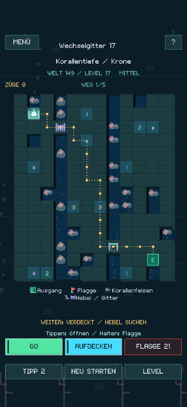
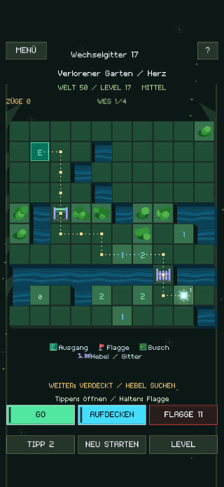
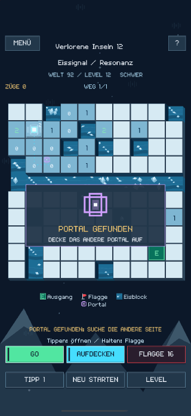
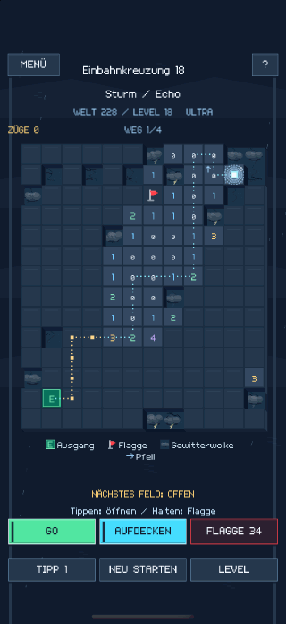
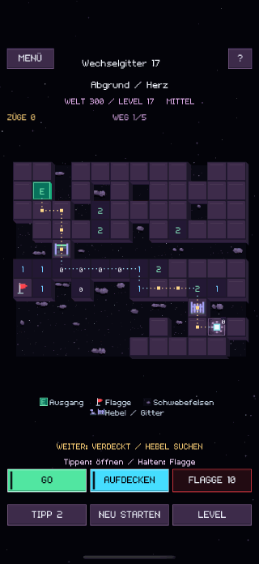

Jedes Feld verändert den Weg.
Decke ein Feld auf, um den Hinweis zu lesen. Markiere Minen mit Flaggen und drücke GO, um das Licht zu bewegen. Sobald der sichere Weg aufgedeckt ist, führt GO END das Licht bis zum Ausgang.
LUMEN MINE
Lies die Zahlen, markiere Minen und decke einen sicheren Weg zum Ausgang auf. Du bereitest den Weg vor. Das Licht folgt ihm.
Decke ein Feld auf, um den Hinweis zu lesen. Markiere Minen mit Flaggen und drücke GO, um das Licht zu bewegen. Sobald der sichere Weg aufgedeckt ist, führt GO END das Licht bis zum Ausgang.
Zerstöre Ziegel mit einem begrenzten Vorrat an Hämmern, öffne Türen, betätige Hebel und nutze Portale. Wenn du einen Schlüssel für eine Tür einsetzt, kann die andere verschlossen bleiben.
Du kannst den Ausgang erreichen, ohne jedes Feld aufzudecken. Löse für ein perfektes Ergebnis einen größeren Teil des Spielfelds und verdiene Sterne.
Lumen Mine · YouTube
Sieh dir dieses kurze Gameplay-Video an und entdecke die Rätselwelten und Screenshots.









Erkunde die ersten drei Welten kostenlos. Ein einmaliger In-App-Kauf schaltet das ganze Spiel mit insgesamt 300 Welten und 6.000 Rätseln frei.